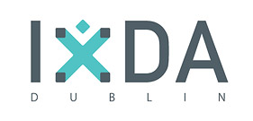
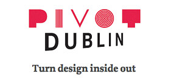

Dublin
Céad Míle Fáilte…
… A Hundred Thousand Welcomes to you! Find out everything you need to know about how to get here, where to stay, getting around and what to do. Visit the official Dublin Tourism website.
Dublin Design
You’re probably aware of Dublin’s musical, literary or dance exports but how much do you know about our love for design? If we were a pint of Guinness, our cultural offerings would be the famous creamy head and the Dublin design scene would be the thousands of bright bubbling currents underneath the surface.
As the World City of Science in 2012, one of 3 shortlisted cities for World Design Capital in 2014 and now the first-ever European host for Interaction in Europe, you will discover there is much more to Ireland than Riverdance and leprechauns. Here’s a taste of our thriving design scene:
“In Ireland, the inevitable never happens and the unexpected constantly occurs.” —Sir John Pentland Mahaffy

IxDA Dublin was founded in October 2008 to provide local Interaction Design practitioners and academics with an outlet to come together, share ideas and build community. Our monthly events tend to be informal, where a very social group of local designers discuss, present and host workshops around different themes. Topics covered to date include eye tracking, personas, beer storming, conference reviews, sketching workshops and innovation trials.

Pivot Dublin is the home of Dublin’s bid for World Design Capital in 2014. It should be the first stop if you want to know about our design history, the city and design events.
Run by non-profit organisation Design Twentyfirst Century project and supported by the Creative Dublin Alliance in partnership with Dublin City Council, Designing Dublin is a series of projects aiming to use design processes and tools and engagement with the community to transform our city. Read up on their work and check out the “100 Exciting Things You Didn’t Know About Dublin City Centre” Google Map.
Getting Here
By Air
Dublin International Airport (DUB) services over 177 different routes, including 28 services to UK airports and over 100 services to other European airports.
Coming from the USA or Canada?
If you’re coming across the Atlantic, you have a few choices for direct flights to Dublin. Your best bet is coming through New York or Chicago – they have the most frequent flights.
Airlines that fly direct to Dublin:
- Aer Lingus: Boston, Chicago, New York, Orlando
- Continental: New York
- Delta: Atlanta, New York
- US Airways: Charlotte, Philadelphia
- Air Canada: Toronto
“Every great European race has sent its stream to the river of the Irish mind.”—Thomas Davis
Coming from Asia or Australia?
On top of a long flight, unfortunately you’ll also probably have to come through London Heathrow – it’s the major international hub to Dublin with over 15 return flights per day.
By Boat
As an island, you can also access Dublin by sea. A ferry from Holyhead in Wales to Dublin Port will take 3 hours if you are bringing a car, or just under 2 hours if it’s only yourself. There are also additional routes from France and the UK which connect to either Dun Laoghaire (30 minutes south) or Rosslare (2.5 hours south).
If you’d like to do something a bit different and book a ferry try:
Visa Information
People from most countries will be able to enter Ireland without a Visa, but we recommend that you check the Department of Foreign Affairs website.
Where to Stay
If you want to book one of our hotels at the special Interaction12 rate, most of them require you to use our online registration form (the same one used to register!), and pay your first night as a deposit (this is non-refundable if you cancel your booking). If you have already registered, but would like to add accommodations to your registration, you can use our registration management system to do so. You’ll need your registration Access Key – included in your confirmation email – to use the system.
If you need any help booking accommodations, or if you are looking for a room or hotel that is not listed on our site, feel free to contact Abbey Conference at: register@interaction.ixda.org or by phone: +353 1 648 6130. They will be more than happy to assist.
If you would prefer to contact the hotels directly for your booking, both the Clarion and the Maldron offer that option. Otherwise, we recommend contacting Abbey Conference.
All rates are inclusive of service charge and VAT, and include a full Irish breakfast. Checkin is 3:00pm and checkout is 12:00pm midday.
“For Dublin can be heaven,
With coffee at eleven,
And a stroll in Stephen’s Green.”—Dublin Saunter
4-Star Hotels
Morrison Hotel (Official Interaction12 hotel)
The Morrison is one of the most luxurious and visually-stunning hotels in Ireland. Its architects have incorporated an 18th century facade of a Georgian townhouse alongside a thoroughly modern south-facing front over looking the River Liffey. The hotel offers 138 guestrooms, a fitness centre, restaurant and bar. Located on Ormond Quay, it is 10 minutes walk from O’Connell and Grafton streets and within easy walking distance to many of Dublin’s attractions.
- Distance to conference venue: 15 minutes walk
- Rates per night: €145 Single, €160 Twin/Double (January 30th through February 3rd, inclusive)
- Rates per night: €175 Single, €190 Twin/Double (February 4th & 5th)
- Book online now
The Clarion Hotel IFSC
Overlooking the River Liffey the Clarion IFSC hotel is very centrally located in the capital’s International Financial Services Centre. A modern hotel, it has 180 bedrooms, restaurant, bar and a lounge serving snacks throughout the day. Guests have access to the leisure centre and spa facilities which include an 18m swimming pool, a gym and treatment rooms. The Clarion is within easy reach of all Dublin city attractions, with O’Connell Street and Temple Bar both a ten-minute walk away.
- Distance to conference venue: 2 minutes walk
- Rates per night: €145 Single, €155 Twin/Double
- Book Now! (Use code: IXDA2012)
- Telephone: +353 1 433 8800
Maldron Hotel Cardiff Lane
The Maldron Hotel Cardiff Lane offers 304 spacious contemporary guestrooms (including 35 executive rooms), a popular restaurant and a trendy bar. Guests have full access to the Club Vitae Health & Fitness Club which has a 22m swimming pool, sauna, jacuzzi, steam room and gym. Overlooking the Grand Canal Theatre, and within walking distance of the O2 Dublin, the hotel is also ideally placed opposite the new Dublin Convention Centre and is within walking distance of the city centre.
- Distance to conference venue: 2 minutes walk
- Rates per night: €135 Single, €145 Twin/Double
- Book Now! (Use code: IXDA2012)
- Telephone: +353 1 643 9500
3-Star Hotels
O’Callaghan Mont Clare
The Mont Clare Hotel is a superior 3-star Georgian building with 74 bedrooms, plus a restaurant and bar. The bedrooms were refurbished in 2004 and are fully air-conditioned. Located in the heart of Georgian Dublin at Merrion Square and next to Trinity College, it is also 200 meters from Grafton Street and close to the National Art Gallery.
- Distance to conference venue: 10 minutes walk
- Rates per night: €80 Single, €95 Twin/Double
- Sold out
The Trinity Capital Hotel
The Trinity Capital Hotel is modern hotel opened in May 2000. The hotel features 82 bedrooms, each designed with an art deco influence. There is a wine and coffee bar in the lobby as well a restaurant, a bar and night-club. Located in Dublin City Centre it is a 5-minute walk to Grafton St and Temple Bar.
- Distance to conference venue: 15 minutes walk
- Rates per night: €109 Single, €119 Twin/Double
- Sold out
Hotels on the Map
View full map in another window.Venues
Convention Centre Dublin
Conference Venue
This landmark building was designed by Pritzker award-winning Irish architect Kevin Roche, and features a stunning glass fronted atrium running the full height of the building – giving visitors panoramic views of the River Liffey, Dublin city centre and the Wicklow mountains.
The CCD is around ten minutes walk from Dublin city centre, and you can also get there by bus, train (DART), light rail (LUAS) or Dublin Bikes.
“A picture is worth a thousand words. An interface is worth a thousand pictures. ”– Ben Shneiderman
{kind=link}
Institute of Art, Design and Technology, Dun Laoghaire
Workshops Venue
Dun Laoghaire Institute of Art, Design & Technology (IADT) was established in 1997 and currently has over 2,250 full-time and 800 part-time students It offers courses in media and visual arts, uniquely combined with enterprise, technology and psychology.
Dun Laoghaire is on the coast 30 minutes south of Dublin city centre and you can get there by train (DART) or bus.